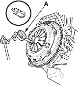
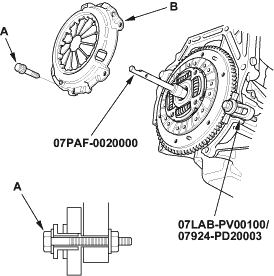
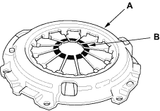

Special Tools Required
- Clutch alignment tool set, 07PAF-0020000
- Ring gear holder, 07LAB-PV00100 or 07924-PD20003
Pressure Plate and Clutch Disc Removal
- Check the diaphragm spring fingers for height using the dial indicator (A). If the height is more than the service limit, replace the pressure plate.
Standard (New):
0.6 mm (0.02 in.) max.
Service Limit:
0.8 mm (0.03 in.)


- Install the special tools.

- To prevent warping, unscrew the pressure plate mounting bolts (A) in a criss-cross pattern in several steps, then remove the pressure plate (B).
- Inspect the pressure plate (A) surface for wear, cracks, and burning.

- Inspect the fingers of the diaphragm spring (B) for wear at the release bearing contact area.